1. 왜 github?
-
git: 소스코드를 관리하기 위한 버전 관리 시스템, 이력 관리와 협업과 관련된 다양한 기능을 제공
-
github: git 을 인터넷에 업로드하는 서비스, 이외에도 유사 서비스 (gitlab 등) 이 있음
git은 브랜치, 모듈, 로그 등 다양한 기능을 제공하여 개발환경에 훌륭하고 다양한 편의 기능을 제공 하지만, 복잡해보이는 수많은 개념 + 낯선 터미널 명령어때문에 진입 장벽이 다소 높다고 생각합니다.
따라서 Google Drive 나 Naver Cloud 와 같이, github를 코드 + 파일을 저장하는 클라우드 서비스처럼 활용하는 방법만 소개하면 도움이 될 것이라고 생각해 이번 포스트를 작성합니다.
2. 빠른 시작
2.1. 준비
2.1.1. (선택) IDE 설치 Visual studio code
눌러서 설치 방법과 기본 사용법 확인
-
Visual studio code 의 장점
-
오픈소스
-
유저수가 많아 다양한 확장 플러그인 사용 가능
-
프로그램 내에서 터미널 사용이 편리
-
최적화가 잘되어 있어 실행 & 반응속도 빠름
-
타 프로그램 (예: Atom) 에 비해 한글 입력이 안정적
-
-
사이트 주소: https://code.visualstudio.com/
-
설치 방법
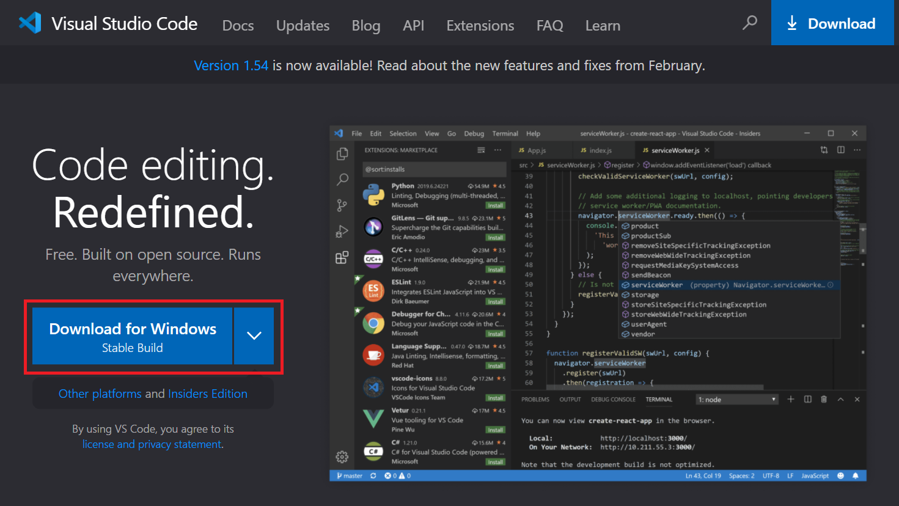설치 옵션중 아래 표시된 두 옵션 ("Code로 열기"…) 은 탐색기에서 폴더 상태로 바로 프로젝트를 열기 위해 체크한 상태로 설치하는 것을 추천합니다.
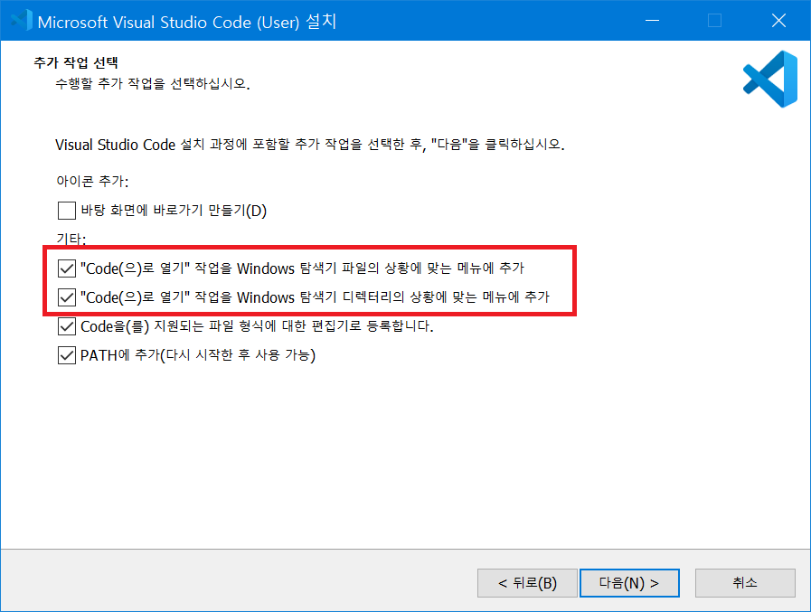-
프로젝트 폴더 열기
프로젝트 폴더채로 열면 좌측에 프로젝트 트리구조가 바로 나타나고 터미널이 프로젝트 root 폴더 상태로 열려 편리합니다.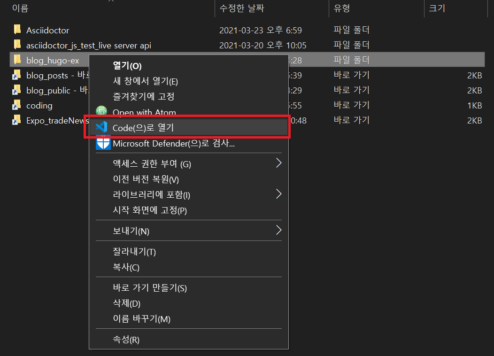 -
터미널 열기/닫기 단축키
Crtl+`
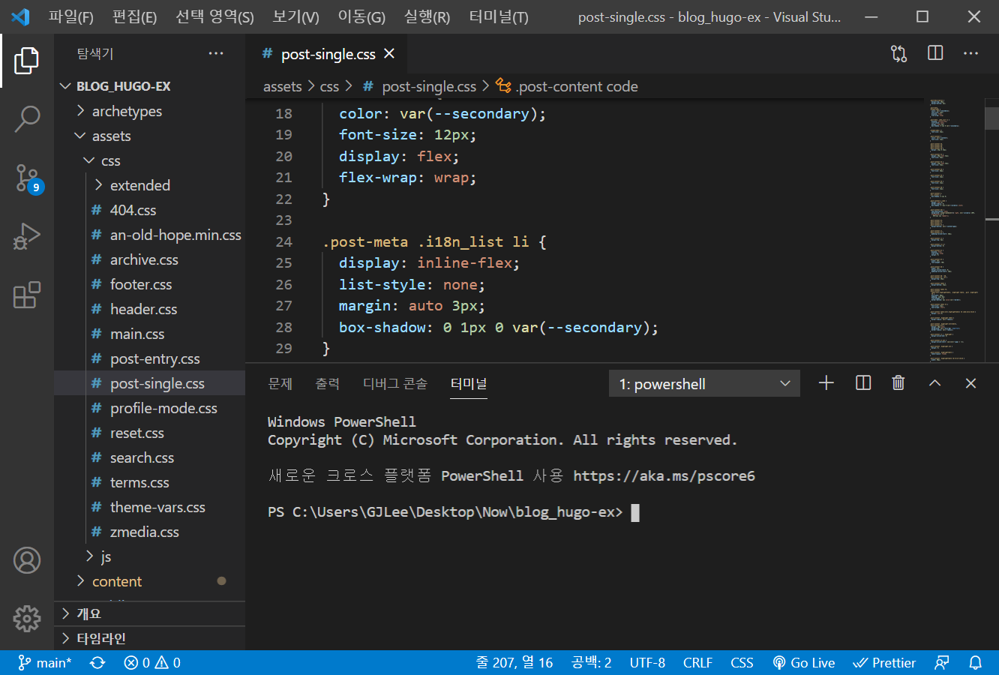
-
2.1.3. github
저장소 (Repository) 만들기
-
New 클릭
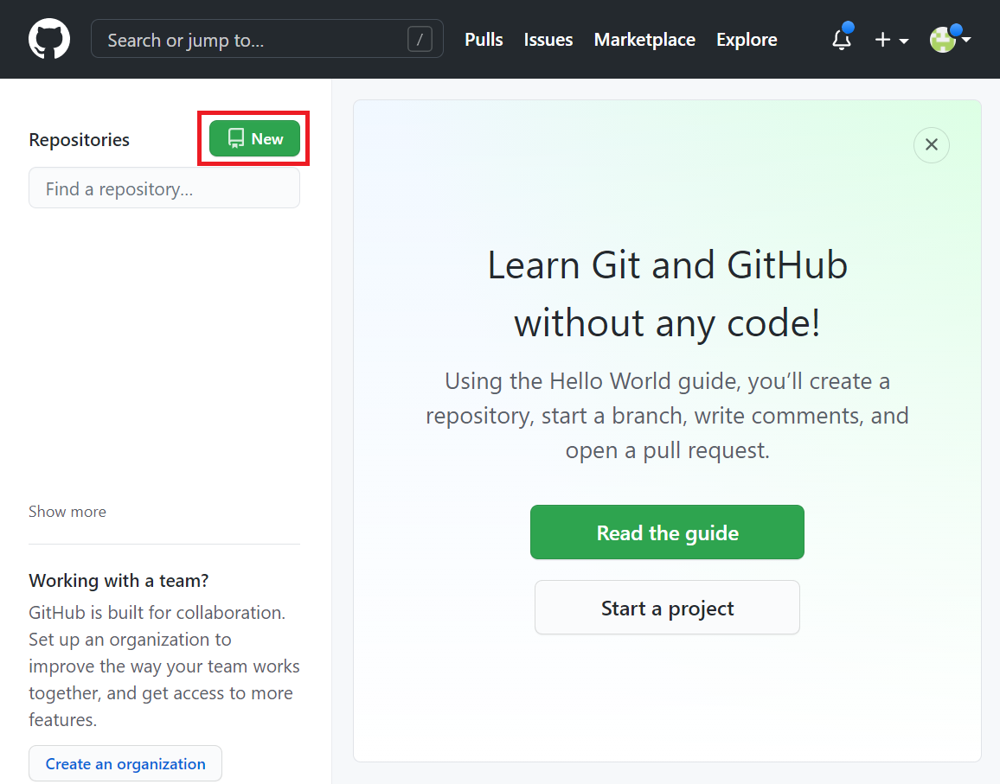 -
정보 입력 및 저장소 생성
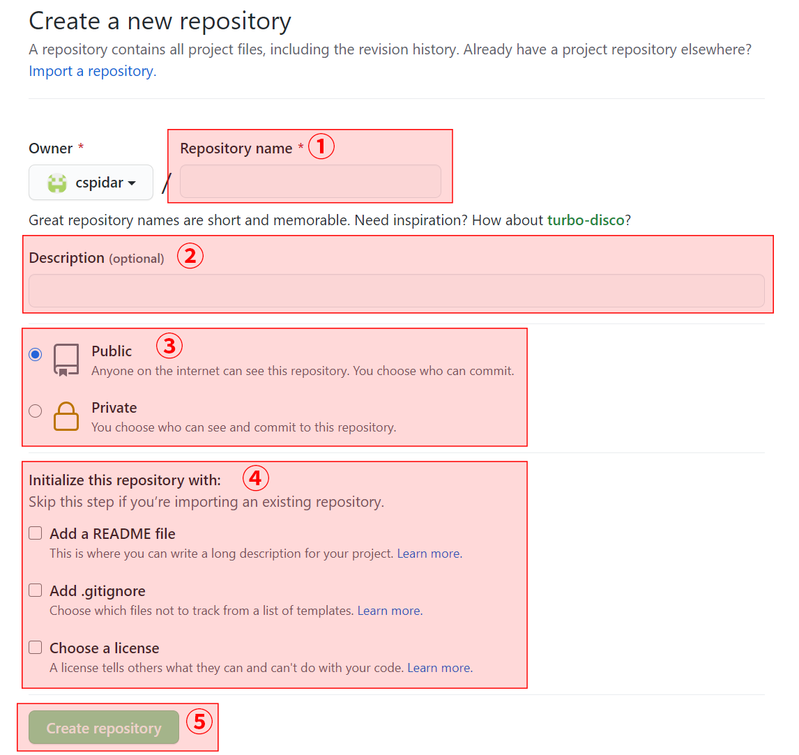① Repository name: 저장소 이름. 참고로 저장소의 전체 주소는 https://github.com/사용자아이디/저장소이름.git 의 형태로 설정됩니다.
② Description: 저장소 설명. 필수 아님.
③ Public / Private: 저장소의 공개 / 비공개 여부를 선택. 편한대로 설정하세요.
④ 필수 아님.
⑤ Create repository: 저장소 생성. ①번 항목 "저장소 이름"만 적당히 써주고 바로 클릭해도 무방합니다.
저장소에 연결
방금 생성한 github의 저장소와 사용할 기기내 원하는 폴더를 서로 연결합니다.
-
원하는 폴더를 Visual studio code 를 통해 열고 터미널 창을 켜거나 기타 터미널 프로그램을 통해 여세요. Visual studio code 기본 설치 및 폴더 열기 방법은 2, “빠른 시작” 챕터 맨 처음 (선택) IDE 설치 방법 확인: Visual studio code 항목에서 확인 항목에서 확인할 수 있습니다.
-
원하는 폴더를 열었는지 확인하세요. (아래는 Github_test 폴더를 연 이미지 입니다.)
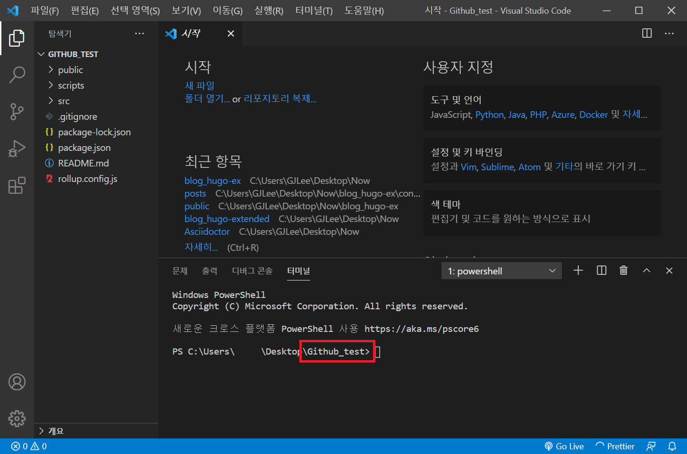 -
다음 명령어들을 입력하세요.
-
git init: 폴더에 git을 사용할 수 있도록 준비합니다.
git init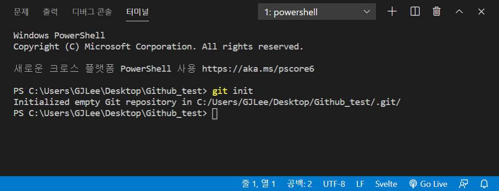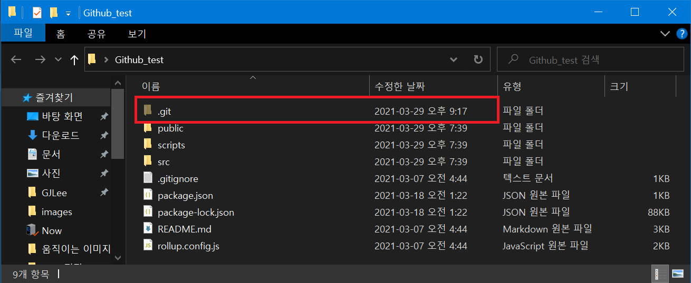".git" 이라는 숨김 폴더가 프로젝트 폴더에 생성됩니다. 프로젝트의 git 관련 상태가 저장되어 있어서 해당 폴더를 지우면 git 관련 상태를 초기화할 수 있습니다.
-
만든 github 저장소의 "git remote add origin" 으로 시작하는 항목을 복사 후 터미널에 붙여넣어 입력하세요. 폴더를 2.1.3.2, “저장소 (Repository) 만들기” 에서 만든 github 저장소와 연결합니다.
git remote add origin https://github.com/-----/-----.git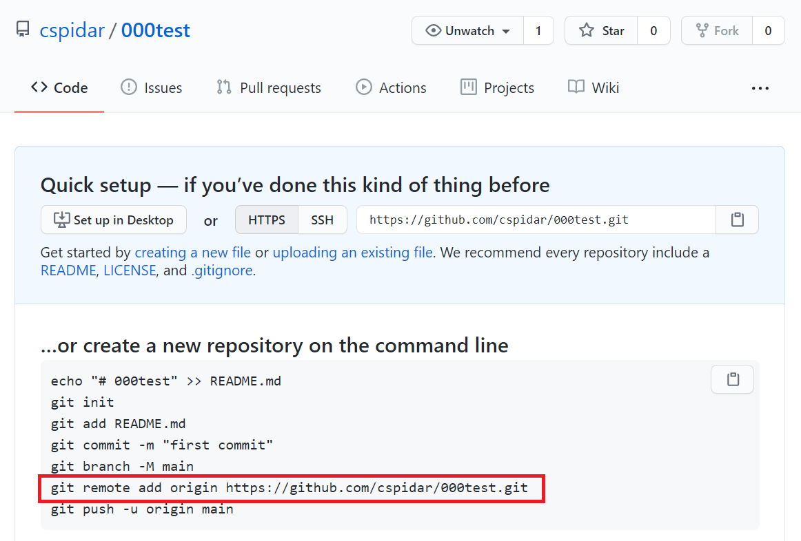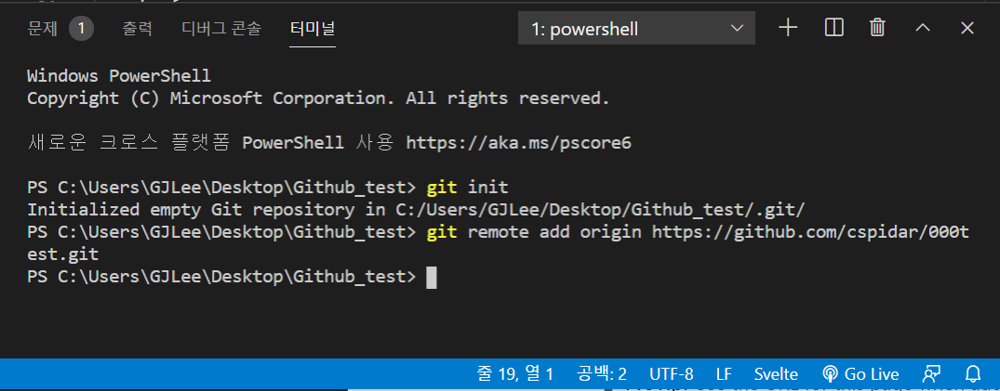아무런 메세지도 나오지 않는것이 정상적으로 입력된 상태입니다.
-
저장소에 업로드 하기 (push)
-
git add .: 폴더내 전체 파일을 업로드 대상에 추가합니다.
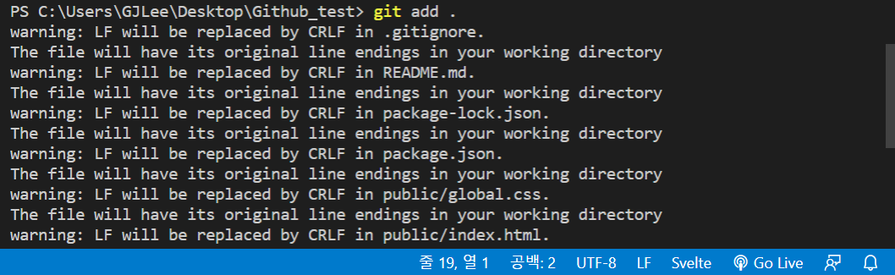 -
git commit -m '커밋 메세지': 이번 업로드에 대한 설명 작성할 수 있습니다.
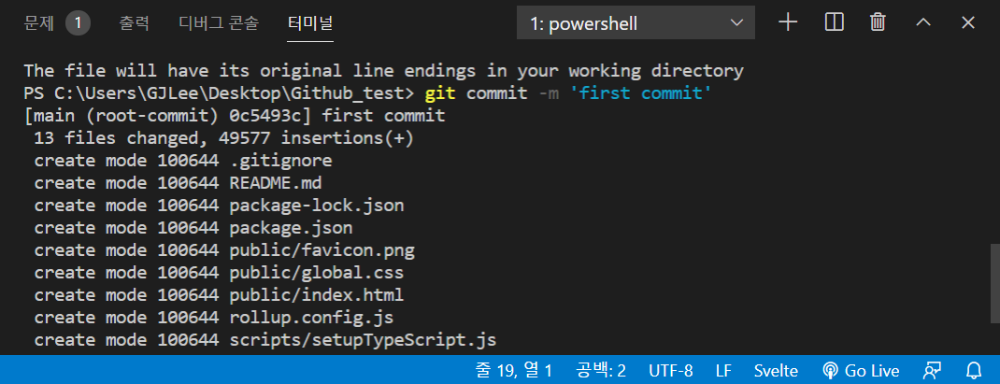 -
git push origin main: 업로드를 실행합니다.
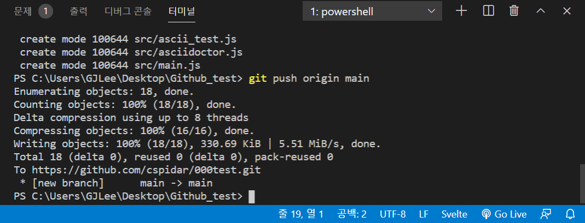git add . git commit -m 'first commit' git push origin main지금 (github를 웹하드처럼 사용하려는) 은 add, commit, push를 연속된 과정이라고 생각하세요. 많은것을 빠뜨리고 이야기하지만, 심화 내용은 더 잘 설명되어있는 자료가 많으니 참고하시면 좋을듯 합니다.
커밋 메세지는 github에 파일 및 코드가 업로드 되었을때를 구분하는 역할을 하며 아무 메세지나 입력해도 되지만, 보통은 이번에 올릴 코드나 파일에 대한 짧은 설명을 입력합니다.
저장소에 업로드된 파일 확인
github 저장소 페이지에 가보면 정상적으로 업로드 되었음을 확인할 수 있습니다.
|
git은 버전 및 이력관리를 위한 툴인 만큼, 내용이 수정된 같은 이름을 가진 파일이라도 수정 내용만 새로 업데이트 하며 이전의 상태로 보존하여 이후에 추적이 가능합니다. |
다른 작업 환경에서 저장소 내용을 복사 (clone) 하기
-
2.1.3.3, “저장소에 연결” 챕터의 첫번째 과정과 같이, 원하는 폴더를 Visual studio code 를 통해 열고 터미널 창을 켜거나, 기타 터미널 프로그램을 통해 여세요.
-
git clone "저장소 주소".git 을 입력하면 해당 폴더내 저장소 이름 폴더 안에 해당 저장소가 복사됩니다.
git clone https://github.com/-----/-----.git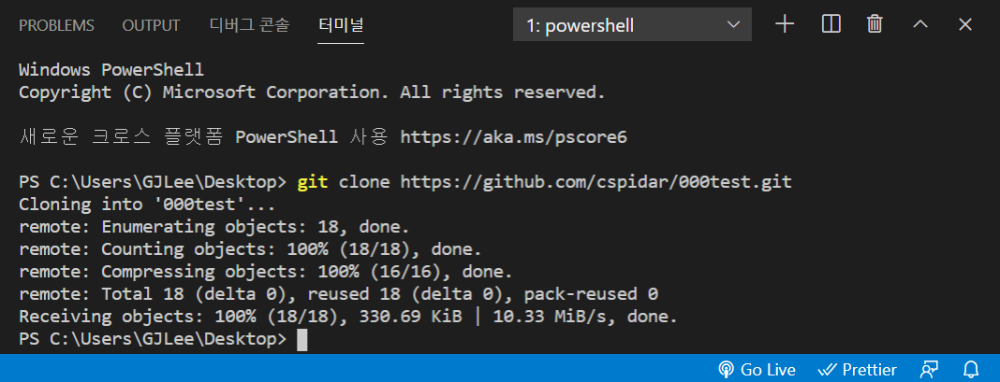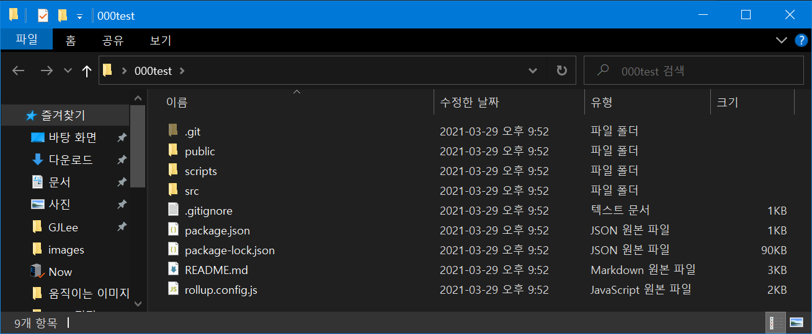
기존 작업 환경에서 최신 저장소 내용을 끌어 (pull) 오기
-
2.1.3.3, “저장소에 연결” 챕터의 첫번째 과정과 같이, 원하는 폴더를 Visual studio code 를 통해 열고 터미널 창을 켜거나, 기타 터미널 프로그램을 통해 여세요.
-
git pull "저장소 주소".git 을 입력하면 해당 폴더내 저장소 이름 폴더 안에 해당 저장소가 복사됩니다.
git clone https://github.com/-----/-----.git